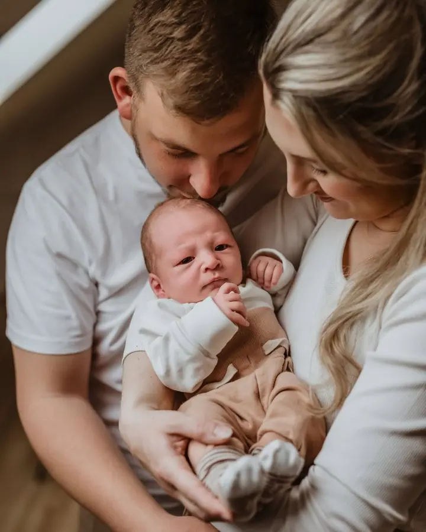

Rodinné focení
Přirozené rodinné chvíle plné smíchu, blízkosti a upřímných emocí. Hodinu fotíme venku v podvečerním světle a hodí se to pro rodiny, maminky s dětmi, páry i čtyřnohé mazlíčky.

Jmenuji se Markéta Racková a na Berounsku fotím rodiny, budoucí maminky i čerstvě narozená miminka. Nejraději fotím venku v přirozeném světle, na pečlivě vybraných míste…
Rezervovat termínJsem máma dvou dětí. Pocházím z Plzně, několik let jsem žila v Praze a dnes bydlím na Berounsku, kde také nejčastěji fotím. Pokud si to vaše focení žádá, ráda za vámi přijedu kamkoliv po republice.


Fotografii jsem propadla už v roce 2009. Dřív jsem fotila hlavně svatby, ty ale dnes už nenabízím, protože mi moje hlavní práce nedovoluje plánovat termíny tak dlouho dopředu. Věnuji se rodinám, dětem a těhotenskému a párovému focení. Už přes šest let fotím také ve školkách a školách. Baví mě tam fotit děti přirozeně, se skutečným pozadím a bez zbytečného stresu.
Mám ráda život ve všech jeho podobách: čas s rodinou, teplé letní večery, západy slunce, dobrou kávu, jídlo i cestování. Dělá mi radost dělat radost druhým, ať už maličkostí, nebo fotkou, která se časem stane cennou vzpomínkou.
Co fotím
Přirozené rodinné chvíle plné smíchu, blízkosti a upřímných emocí. Hodinu fotíme venku v podvečerním světle a hodí se to pro rodiny, maminky s dětmi, páry i čtyřnohé mazlíčky.
Citlivé a něžné fotky jednoho z nejkrásnějších a nejdůležitějších období života. Klidně i s partnerem a staršími sourozenci, venku v rozkvetlé přírodě.
Opravdové fotky čerstvě narozených miminek do dvou měsíců, bez aranžování. Přijedu za vámi domů, kde je miminko v bezpečí, v klidu a ve vaší blízkosti.
Přirozené fotky dětí v jejich prostředí se skutečnými dekoracemi a školní portréty v příjemné atmosféře. Objednávky i výběr fotek probíhají pohodlně online, takže pedagogové nemají žádnou administrativu navíc.
Postup
Ozvěte se, jakmile o focení začnete uvažovat. Probereme vaši představu, jak moc na fotky spěcháte a kolik je dětem let, abych focení přizpůsobila jejich tempu.
Poradím vám vhodný měsíc i čas, protože venku fotím hlavně v podvečer při západu slunce. Pevné termíny potvrzuji obvykle jeden až dva měsíce předem.
Rodinné focení trvá hodinu venku na pečlivě vybraném místě. Miminka fotím u vás doma, v klidu a bez aranžování.
Fotky vám pošlu k výběru do online galerie. Vybrané fotky pečlivě upravím a dostanete je v digitální podobě.
Otázky
Ideálně už během těhotenství. Poznačím si termín porodu a pevné datum domluvíme, až budete z porodnice doma. Na typické spící fotky je nejlepší doba do 14 dnů od narození, ale fotit se dá i později.
Termín bez problému přesuneme. Všechno je o domluvě a jde mi o to, abyste si focení užili.
Nejčastěji na pečlivě vybraných místech mezi Berounem a Rokycany. Ráda přijedu i do Prahy nebo Plzně a podle vašeho přání se dá zajistit i pronájem ateliéru.
Rodinné focení stojí 2 500 Kč a zahrnuje hodinu v exteriéru, 14 upravených fotek a dojezd 20 km od Cerhovic. Lifestyle focení miminka u vás doma stojí 3 000 Kč za hodinu a 10 upravených fotek.